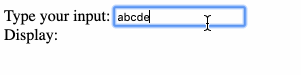
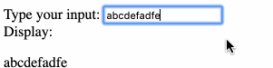
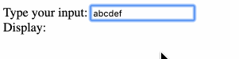

I was implementing the sign up function for TripTime, and added a onChange handler for the email input to send an API request to check if the email address has already been taken.
And the API server is dying.
There needs to be a delay after the user stops typing before the event handler gets invoked, and my teammate suggested that debounce is the solution.
The debounce function delays the processing of the keyup event until the user has stopped typing for a predetermined amount of time.
Read the debounce code
First let’s have a look at what a debounce function should look like:
1 | // Credit David Walsh (https://davidwalsh.name/javascript-debounce-function) |
A debounce is a higher-order function, which is a function that returns another function (named executedFunction here for clarity). This is done to form a closure around the func, wait, and immediate function parameters and the timeout variable on line 9 so that their values are preserved.
Here are the meaning of each variable:func: The function that you want to execute after the debounce timewait: The amount of time you want the debounce function to wait after the last received action before executing func.immediate: This determines if the function should be called on the leading edge and not the trailing. This means you call the function once immediately and then sit idle until the wait period has elapsed after an action. After the idle time has elapsed, the next event will trigger the function and restart the debounce.timeout: The value used to indicate a running debounce.
Usage of debounce
Common scenarios for a debounce are resize, scroll, and keyup/keydown events. In addition, you should consider wrapping any interaction that triggers excessive calculations or API calls with a debounce.
Here is an experiment:
1 |
|
- Outcome of version a: 
As can be seen, only after I have stopped typing for 400ms will the display be updated. - Outcome of version b: As can be seen, the display is updated immediately.
- Outcome of version c:
As can be seen, the display is updated only when the input box loses focus.
This has to do with the difference betweeninputevent andchangeevent- oninput event occurs when the text content of an element is changed through the user interface. Triggers immediately, unlike change.
- onchange occurs when the selection, the checked state or the contents of an element have changed. In some cases, it only occurs when the element loses the focus
Using react-debounce-input package for React debounce
There are issues related to using debounce in React as it uses event pooling (will get on that later).
The package react-debounce-input deals with debouncing events, and this is what I used for signup:
1 | // import { DebounceInput } from 'react-debounce-input'; |